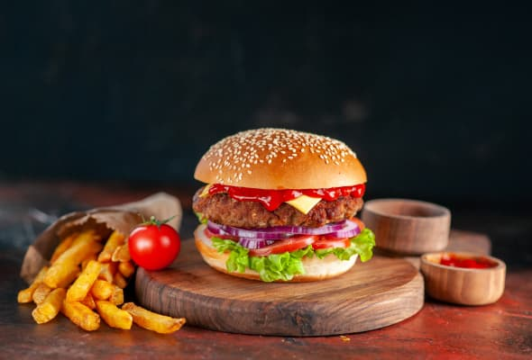
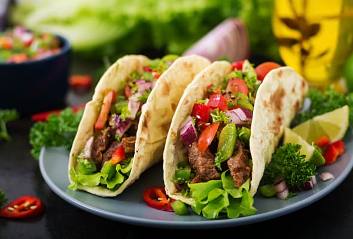
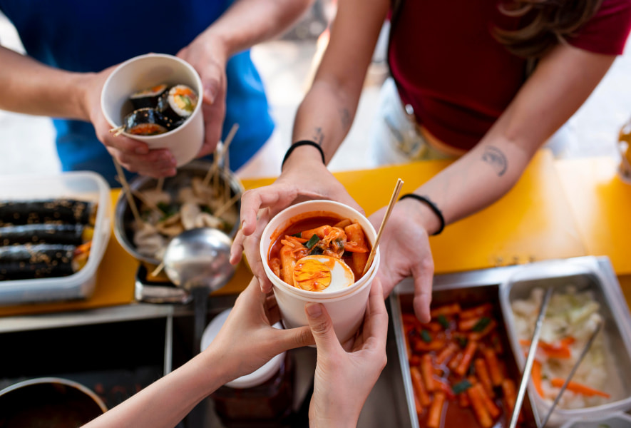
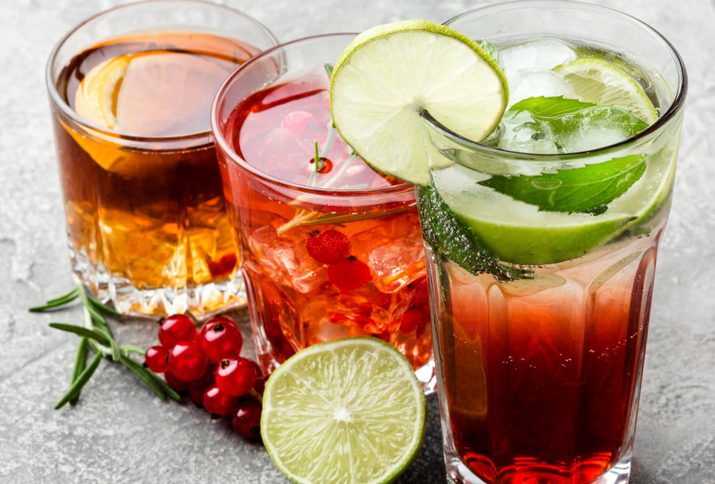
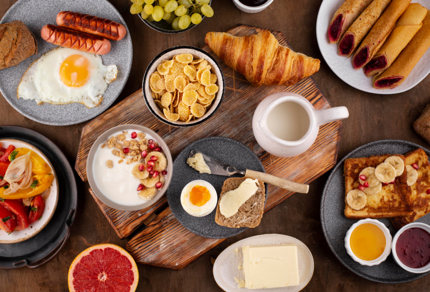
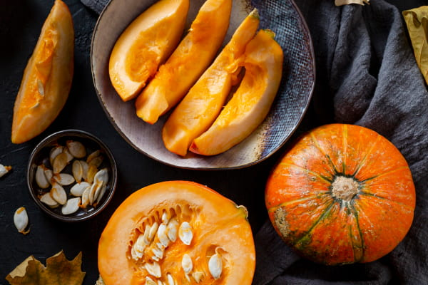
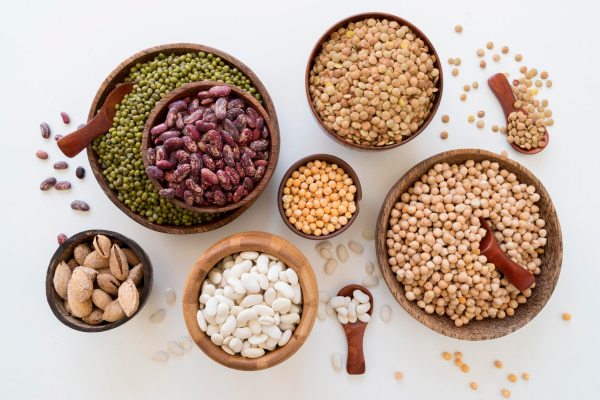
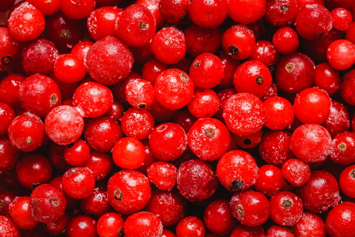

Різноманітність культури харчування Північної Америки пов'язана не лише з історією та національними особливостями континенту, а й з великою кількістю мігрантів з усього світу, які внесли багатогранність харчових традицій у всіх країнах материка.
Північна Америка відома своєю любов'ю до фастфуду. Хот-доги та гамбургери є символами американської культури. Велика кількість відомих міжнародних фастфуд-ланцюжків, таких як McDonald's та Burger King, мають своє коріння саме тут.
Ця пристрасть до швидкого харчування справила значний вплив на харчову культуру регіону, відображаючи споживчі звички та сучасні тенденції. Фастфуд виріс звідси в глобальний феномен, пропонуючи смаки Америки на кожному куточку планети і ставши невід'ємною частиною світової кулінарної спадщини.

BBQ (барбекю) є важливою частиною культури харчування у Північній Америці, особливо відзначаючи себе у Південних штатах. Ця кулінарна традиція є справжньою страстю для багатьох американців, а відомі різноманітні стилі барбекю, такі як техаський з великими кусками м'яса, каролінський з особливим соусом та мемфіський з використанням свинини. Ця традиція не тільки об'єднує сім'ї та друзів під час гастрономічних заходів, але і відображає багатогранність американського смаку та вміння вдосконалювати рецепти на протязі поколінь.
Північна Америка також славиться своєю автентичною мексиканською кухнею, яка є однією з найпопулярніших кухонь на континенті. Мексиканська кухня вражає своєю різноманітністю та використанням характерних інгредієнтів, таких як смачне авокадо, ароматні чилі, сочні томати, традиційна кукурудза, білокачанна сочевиця. Такі страви, як традиційні тако, апетитні фахітас, соковите гуакамоле та пікантна сальса, вражають своїм смаком та корінням у мексиканській культурі, надаючи їм популярності та особливого місця в кулінарному прояві регіону.

Північна Америка славиться своєю багатоманітністю в сфері харчування, і на континенті часто проводяться різноманітні багатонаціональні фестивалі їжі, присвячені різним кухням та традиціям. Ці фестивалі надають чудову можливість скуштувати різноманітні страви та насолодитися культурним розмаїттям через присутність їжі. Завдяки цьому на континенті можна знайти ресторани та кафе, що пропонують кухні з усього світу. Від смачних італійських піц до вишуканих французьких страв, від пахучої азіатської кухні до корінних смаків африканських страв — у вас є можливість насолодитися справжніми смаками різних культур.

Північна Америка славиться популярністю газованих напоїв, таких як кола та лимонад, а також різноманітних безалкогольних напоїв, таких як кава та чай. Зокрема, цей континент є домом для розквітаючої крафтової пивоварної промисловості, особливо в США та Канаді, де функціонує величезна кількість незалежних пивоварень. Ці пивоварні пропонують багатий асортимент різних сортів пива, включаючи екзотичні і експериментальні варіанти, що відображають багатогранність смаків та інноваційний підхід до пивоваріння.

У США та Канаді сніданок вважається надзвичайно важливим прийомом їжі, і йому приділяється особлива увага та значення. Тут традиційно подають страви, які включають яєчню, бекон, пластівці, тості та пончики. Ще однією характерною особливістю є розміри порцій у ресторанах Північної Америки, які часто вражають своїми гігантськими порціями. Це відображає традицію "дедалі більше і краще". Тож, відвідуючи такі заклади, будьте готові ділити страви зі спільними приятелями або просити запакувати залишки для подальшого вживання.

Регіон має багату спадщину та різноманітність продуктів харчування, які справили значний вплив на кулінарні традиції як усередині, так і за межами континенту.
Гарбуз зародився та культивувався тисячоліттями на території Північної Америки, він є важливою частиною історії цього регіону. Вона має особливе значення у культурі та традиціях місцевих американських племен, які використовували гарбуз не лише як їжу, але і для різноманітних релігійних та обрядових цілей. Сьогодні гарбуз широко використовується в кулінарії Північної Америки, де він став не тільки основною інгредієнтом таких популярних страв, як гарбузовий пиріг та гарбузовий суп, а й символом сезону осінніх свят, таких як День подяки та Хелловін.

Різні сорти квасолі, такі як чорна квасоля, червона квасоля і навахо, також мають глибокі корені в історії Північної Америки. Квасоля була не тільки основним джерелом їжі для місцевих американських племен, але й займала важливе місце у кулінарії, додавши багато смакових нюансів до мексиканської та південноамериканської кухні. Цільове використання квасолі в різних стравах надало їй культурне значення та підкреслило її важливість у харчовій спадщині континенту.

Журавлина, також відома як журавлина болотяна, є рослиною, з якою пов'язана довга історія на території Північної Америки. Вона має глибокі корені в використанні місцевими американськими племенами, які вже століттями знаходили способи використання цієї рослини в їжі, медицині та ритуалах. Сьогодні журавлина широко використовується у кулінарії, додаючи свої унікальні смакові властивості до різних страв, включаючи соуси, напої та десерти.

Кукурудза (майс) має своє коріння в Мексиці та Центральній Америці, де вона була культивована протягом тисячоліть. З часом кукурудза стала одним з найважливіших продуктів харчування в Північній Америці, а її використання розповсюдилось у різних формах, таких як цілісні зерна, кукурудзяне борошно та кукурудзяні пластівці, які завоювали популярність завдяки своєму смаку та варіативності в приготуванні.